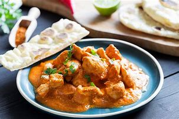

Home
Butter Chicken

Description
Butter chicken, also known as "Murgh Makhani," is a rich and creamy dish that hails from Indian cuisine. It consists of tender chicken pieces marinated in a blend of yogurt and aromatic spices such as turmeric, cumin, garam masala, and chili, then cooked to perfection. The chicken is simmered in a silky, smooth sauce made with butter, cream, tomatoes, and a variety of spices, creating a velvety texture and deep, comforting flavors. The dish is known for its balance of rich, slightly sweet, and savory taste, often with a subtle hint of smokiness from the spices used.
Originally from Delhi, butter chicken has gained international popularity for its indulgent nature and unique flavor profile. It is typically served with naan (soft, pillowy flatbread) or rice, which help to soak up the luscious sauce. While variations exist across regions, the dish remains a beloved comfort food that is enjoyed worldwide, from bustling restaurants to home kitchens. Butter chicken is not only a symbol of India's culinary heritage but also a reflection of the country's rich tradition of blending spices to create extraordinary flavors.
Ingredients
- Boneless chicken (500g)
- Plain yogurt (1/2 cup)
- Lemon juice (1 tbsp)
- Ground turmeric (1 tsp)
- Ground cumin (2 tsp)
- Ground coriander (2 tsp)
- Garam masala (2 tsp)
- Ground chili powder (2 tsp)
- Fresh ginger (2 tbsp, minced)
- Fresh garlic (2 tbsp, minced)
- Salt (1 tsp or to taste)
- Butter (3 tbsp)
- Onion (1 large, finely chopped)
- Tomatoes (2 cups, pureed or crushed)
- Heavy cream (1 cup)
- Sugar (1 tsp, optional)
- Fresh cilantro (for garnish)
Steps
- Marinate the Chicken
- Prepare the Marinade: In a large bowl, combine the yogurt, ginger-garlic paste, ground cumin, ground coriander, red chili powder, garam masala, salt, and lemon juice.
- Marinate the Chicken: Add the chicken pieces to the bowl and mix well, ensuring all the chicken is coated in the marinade. Cover the bowl and refrigerate for at least 1 hour, or ideally overnight, to allow the flavors to develop.
- Cook the Chicken
- Grill or Sear the Chicken: Heat a grill pan, skillet, or oven to medium-high heat. Grill or sear the marinated chicken pieces until they are fully cooked (about 6-8 minutes per side), with a nice char on the outside. You can also bake the chicken at 400°F (200°C) for 15-20 minutes. Once cooked, set the chicken aside.
- Prepare the Sauce
- Sauté Onions: In a large pan, heat 2 tablespoons of butter over medium heat. Add the chopped onions and sauté until they turn golden brown (about 5-7 minutes).
- Add Ginger-Garlic Paste: Add the ginger-garlic paste to the onions and sauté for another 1-2 minutes until fragrant.
- Cook the Tomatoes: Add the tomato puree to the pan, followed by ground cumin, ground coriander, red chili powder, garam masala, and a pinch of salt. Stir and cook the mixture for 5-7 minutes, allowing the tomatoes to soften and the spices to bloom.
- Add Cream and Simmer: Pour in the heavy cream and stir well. Add water if needed to achieve the desired sauce consistency. Let the sauce simmer for 10-15 minutes on low heat, allowing the flavors to meld together and the sauce to thicken.
- Combine the Chicken and Sauce
- Add the Chicken: Add the cooked chicken pieces to the sauce and stir gently to coat them in the rich sauce. Let it simmer for an additional 5-10 minutes, allowing the chicken to absorb the flavors of the sauce.
- Adjust Seasoning: Taste the sauce and adjust the salt or spices if needed. If you prefer a touch of sweetness, you can add a teaspoon of sugar.
- Serve
- Garnish and Serve: Garnish the butter chicken with fresh cilantro and, if desired, a sprinkle of kasuri methi (dried fenugreek leaves) for extra flavor. Serve with naan bread or basmati rice for the perfect meal!